Системы координат и проекции
- Данила Олегович Дрыга
- dryga_do@pfur.ru
- https://kartoweb.itc.nl/geometrics/
https://www.worldmapgenerator.com/
- https://www.jasondavies.com/maps/transition/
- https://projectionwizard.org/
- https://map-projections.net/index.php
- https://epsg.io/
Создание карт
- https://www.worldanvil.com/features/maps
- https://www.campfirewriting.com/interactive-maps
- https://inkarnate.com/
- https://azgaar.github.io/Fantasy-Map-Generator/
Как из кадров получается карта · интерактив
Математика
- Примерно так выглядит Земля:
- Длина Земли вдоль экватора 40 075.696 км
- Длина Земли вдоль меридианов 40 008.548 км
- Поэтому землю часто не принимают за идеальный шар
- …так что кругосветка вдоль меридиана будет короче на 67 км!
- разница меньше 0.2%!
Про начало СК
- Геоцентрические системы координат (например ГСК-2011)
- Селенографические системы координат
- Планетографические системы координат
- Международная небесная система координат (Гелиоцентрическая)
Геоид – Сфера – Плоскость
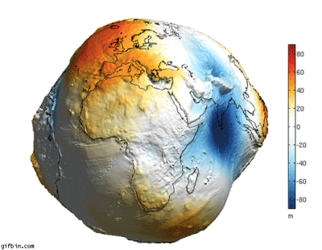
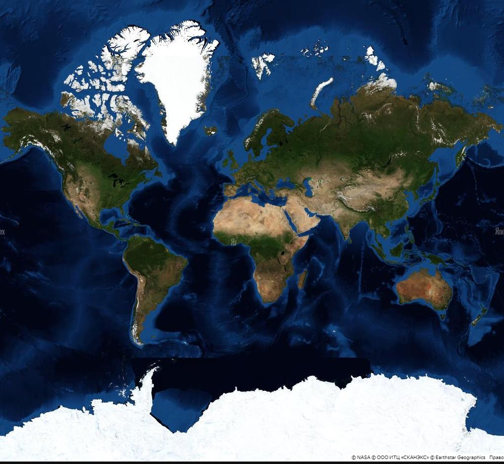
1. Мировой океан 2. Земной эллипсоид 3. Отвесные линии 4. Суша. 5. Геоид
Сфера – Эллипс - Геоид
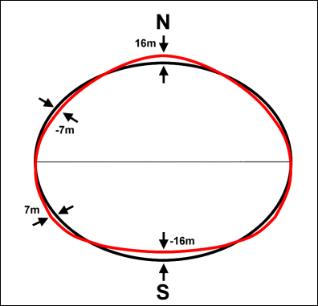
Математика
Тем не менее обычная «математика» с шаром уже не работает

Географическая система координат
- Запись координат:
- в градусах (°) , с долями градусов: N55.63165° W037.55952°
- в градусах (°) и минутах (ʹ) , с долями минут: N55° 37.899’ E037° 33.571’
- в градусах (°), минутах (ʹ) и секундах (ʺ), с долями секунд: N55° 37’53.9’’ E037° 33’ 34.2’’
- Высота?
Математика
Но наша задача перевести этот огромный объект странной формы на плоскую бумагу, на экран компьютера или в мобильный телефон. Как это сделать?
Картографических проекций очень много, с некоторыми можно ознакомиться здесь: pro.arcgis.com
Можно приложить к глобусу лист бумаги и перерисовать(спроецировать) на него все объекты
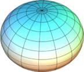
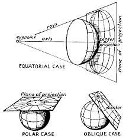
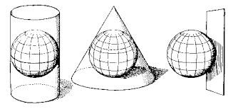
Математика
- В зависимости от того, какой формы лист мы приложим – зависит тип будущей проекции
- Цилиндр – цилиндрическая проекция
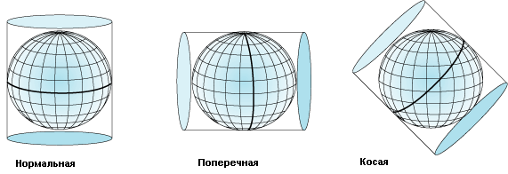
Математика
- В зависимости от того, какой формы лист мы приложим – зависит тип будущей проекции
- Конус – коническая проекция
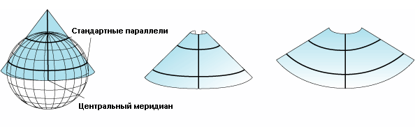

Математика
- В зависимости от того, какой формы лист мы приложим – зависит тип будущей проекции
- Плоскость – азимутальная проекция
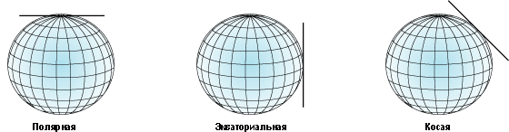
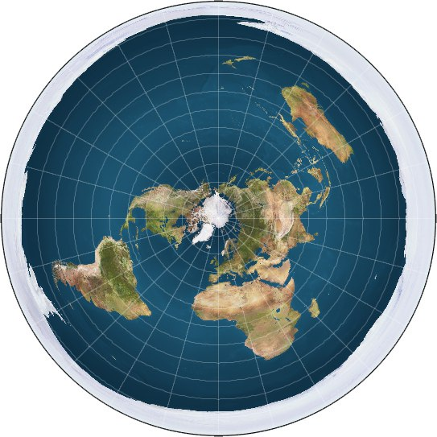
Искажения
- В любой проекции существуют искажения, они бывают четырёх видов:
- искажения длин
- искажения углов
- искажения площадей
- искажения форм
- Применение тех или иных картографических проекций зависит от назначения карты, конфигурации и положения картографируемой области
Классификация проекций по характеру искажений
- Равноугольные проекции
- Равновеликие проекции
- Произвольные проекции
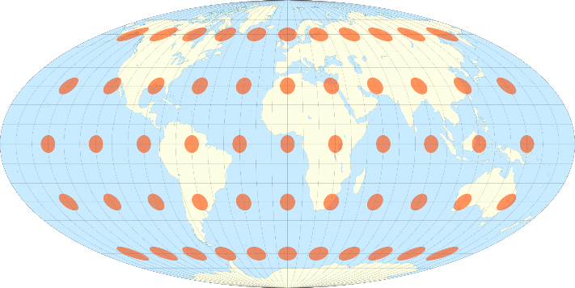
Равноугольная проекция
- картографическая проекция, позволяющая передавать на картах углы без искажений и сохранять в каждой точке постоянный масштаб по всем направлениям, хотя в разных местах карты масштаб различен.
- обладающая свойством конформного отображения
- .
- Проекция Меркатора
- («равноугольная проекция»)
- Проекция Гаусса — Крюгера
- (поперечно-цилиндрическая
- проекция Меркатора)
- Стереографическая проекция
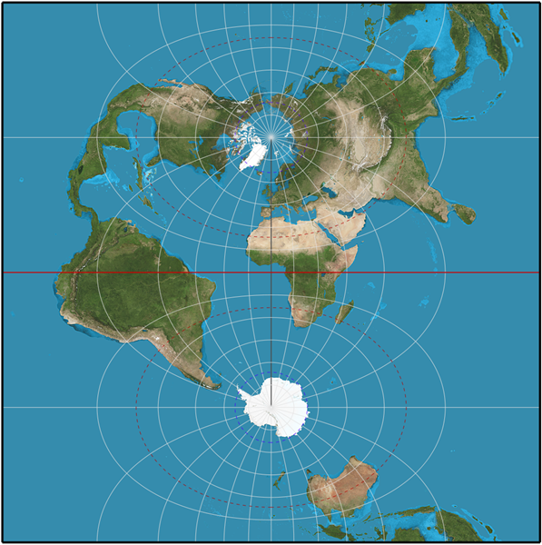
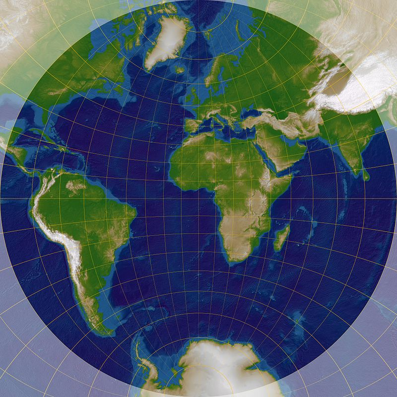
Равновеликая проекция
- картографическая проекция, позволяющая передавать на картах площади без искажений и сохраняющая на всей карте единый масштаб площадей. При этом сильны искажения углов и форм
- Коническая проекция Альберса
- («равновеликая коническая проекция»)
- Азимутальная проекция Ламберта
- (равновеликая азимутальная проекция)
- цилиндрическая проекция Ламберта
- (равновеликая цилиндрическая проекция)
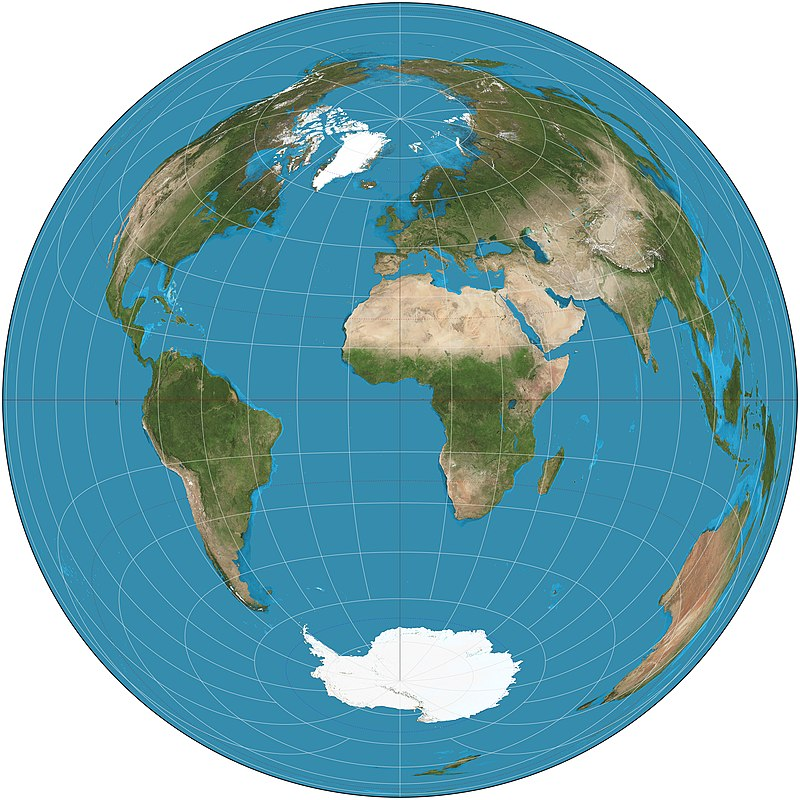
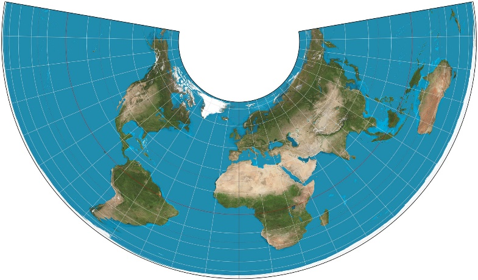
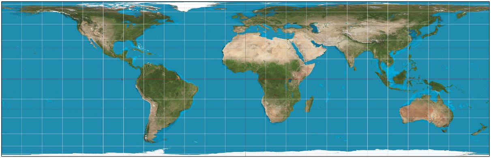
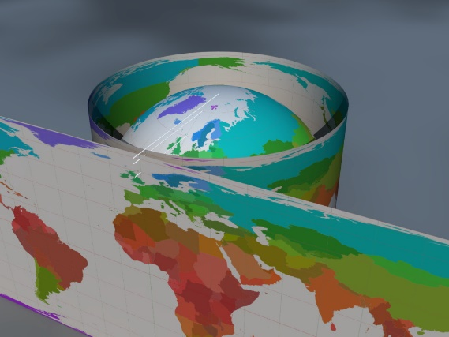
Произвольная проекция
- картографическая проекция, имеются искажения и углов, и площадей, но в значительно меньшей степени, чем в равновеликих и равноугольных проекциях
- Кубическая проекция
- Компактная проекция Миллера
- Проекция Эккерта
- (псевдоцилиндрическая проекция)
- поэтому они наиболее употребляемые
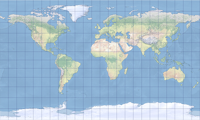
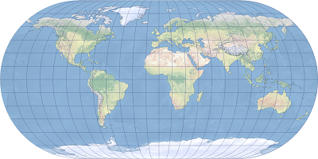
Еще немного проекций
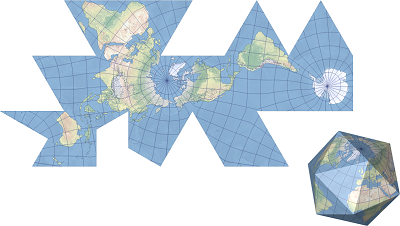
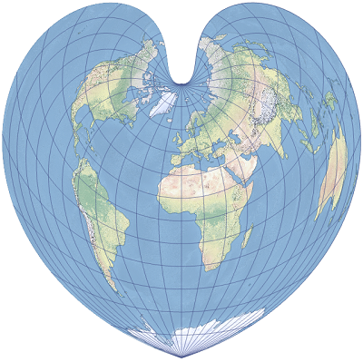
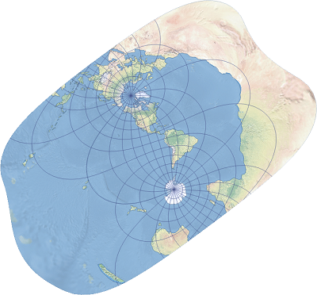
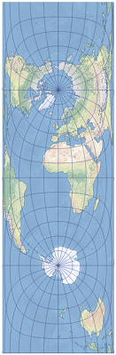
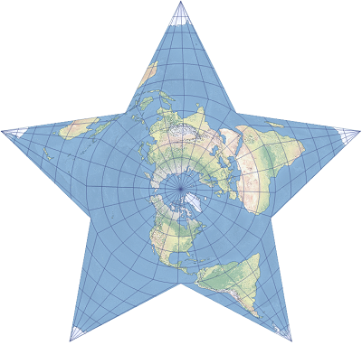
Проекция Меркатора (равноугольная цилиндрическая проекция)
— одна из основных картографических проекций. Разработана Герардом Меркатором для нужд мореходства. Проекция сохраняет углы между направлениями.
траектория движения корабля, идущего с неизменным положением стрелки компаса, изображается прямой линией на карте в проекции Меркатора.
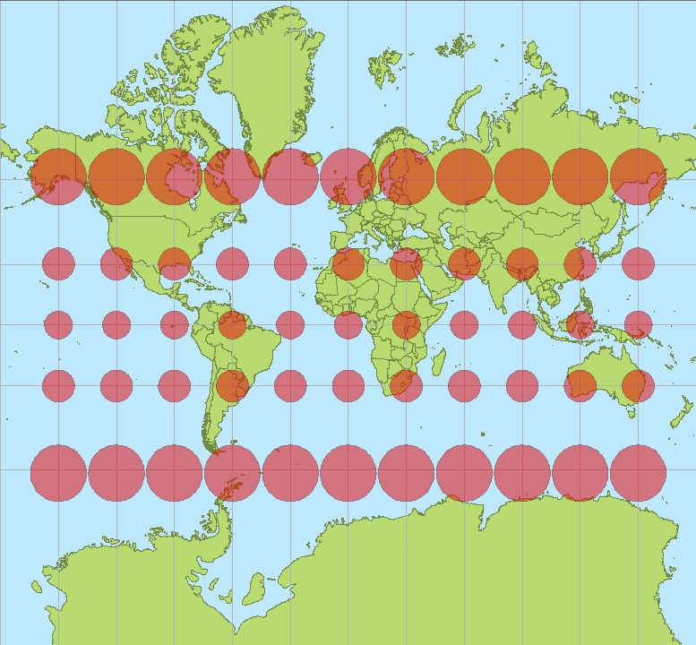
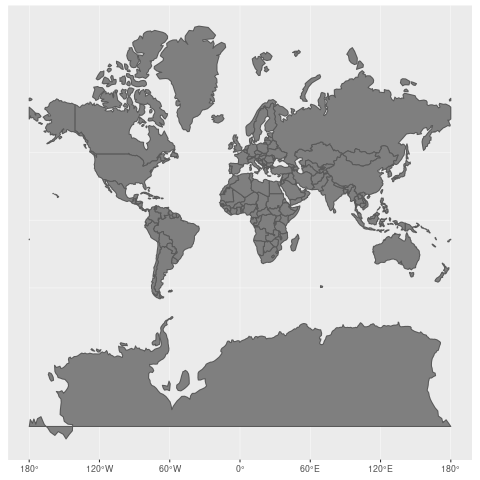
Проекция Гаусса-Крюгера (эллипсоидальная поперечная проекция Меркатора)
— поперечная цилиндрическая равноугольная картографическая проекция
Универсальная поперечная проекция Меркатора «Universal Transverse Mercator» (UTM) – работает аналогично
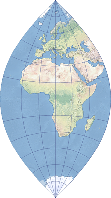
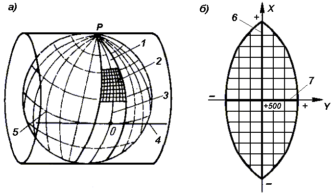
Расстояния
Угловое расстояние: Это угол между двумя лучами, исходящими из центра земли через две точки. Угловые расстояния обычно используются в сейсмологии, и вы можете столкнуться с ними при работе с геоданными.
Линейное расстояние: Это то, что люди обычно имеют в виду, когда говорят о расстоянии между двумя точками на поверхности земли. Часто описывается как расстояние "по прямой".
Расстояние пути: Линейные расстояния - это очень хорошо, но люди не могут летать, как птицы, для преодоления расстояний “по прямой” (напрямик). Поэтому логичным способом измерения расстояния между точками А и Б является измерение расстояния пути по дороге или другому очевидному маршруту.
Источник: Erik Westra - Python Geospatial Development
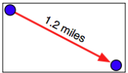
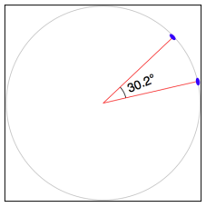
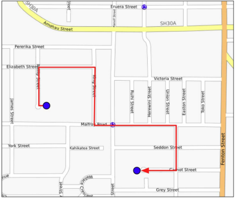
Расстояния
- В геоинформатике работают с расстояниями между точками на поверхности Земли, а не с точками на плоской поверхности, Фактически используется так называемое great circle distance (расстояние по большому кругу).
- Расстояние по большому кругу - это расстояние между двумя точками на сфере , измеренное вдоль дуги большого круга между ними.
- Эта дуга представляет собой кратчайший путь между двумя точками на поверхности сферы.
- Источник:
- Erik Westra –
- Python
- Geospatial
- Development
- расстояние
- по большому кругу
- Сравнение реального расстояния и расстояния, рассчитанного при условии "Плоской" Земли
- http://morez.ru/sposobi-naneseniya-dbk/
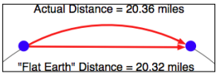
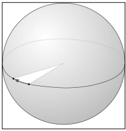
и - географическая долгота и широта двух точек Q и P. Если же между ними существуют абсолютные различия , то центральный угол между ними Δσ определяется сферическим законом косинусов , если один из полюсов используется в качестве вспомогательной третьей точки на сфере
- Задача обычно формулируется в виде нахождения центрального угла Δσ.
- Учитывая этот угол в радианах, фактическую длину дуги d на сфере радиуса r можно легко вычислить следующим образом:
- Расстояния
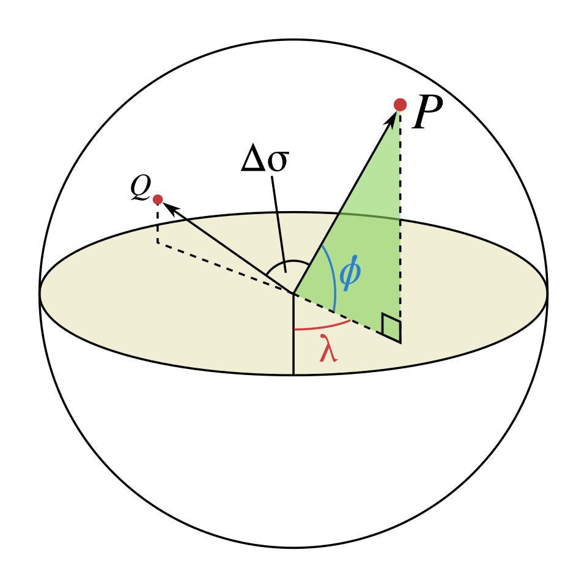
Локсодрома и Ортодрома
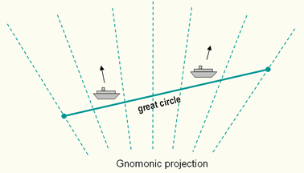
Локсодрома и Ортодрома
Локсодрома, или локсодромия — кривая на поверхности вращения, пересекающая все меридианы под постоянным углом, называемым локсодромическим путевым углом.
Ортодромия ортодро́ма — кратчайшая линия между двумя точками на поверхности вращения, частный случай геодезической линии.
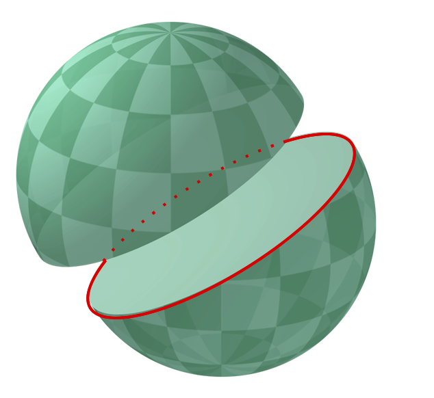
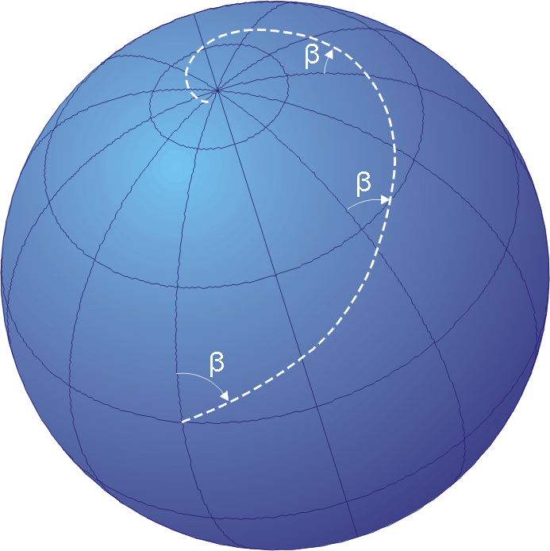
Системы координат
- это набор математических правил, описывающих, как координаты должны быть соотнесены с точками пространства.
- Полярная СК
- Плоская прямоугольная СК
- Пространственная прямоугольная СК
- Географическая СК
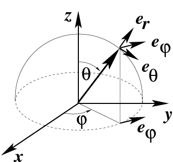
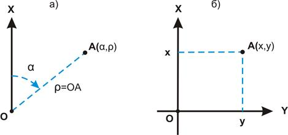
Применяемые в России
- WGS-84 - World Geodetic System (а также UTM)
- Web Mercator
- ПЗ-90.11 - общеземная геоцентрическая система координат «Параметры Земли 1990 года»
- ГСК-2011 - геодезическая система координат 2011 года
- МСК - местная система координат субъекта Российской Федерации
- Архивные:
- СК-42 – система координат 1942 года
- СК-63 – система координат 1963 года
- СК-95 – система координат 1995 года
Основные системы координат России
С 1 января 2017 года все геодезические и картографические работы, предусматривающие создание новых пространственных данных, должны выполняться только в ГСК-2011.
С 1 января 2021 года СК-42 и СК-95 запрещены для новых работ согласно постановлению Правительства РФ № 1240 от 24.11.2016. Используются только для работы с архивными материалами.
https://inner.su/
Местные системы координат.
- МСК-69
- МСК-44
- МСК-36
- МСК-67
- МСК-50
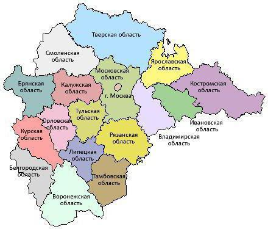
Система координат
Пулковская обсерватория Начало системы координат
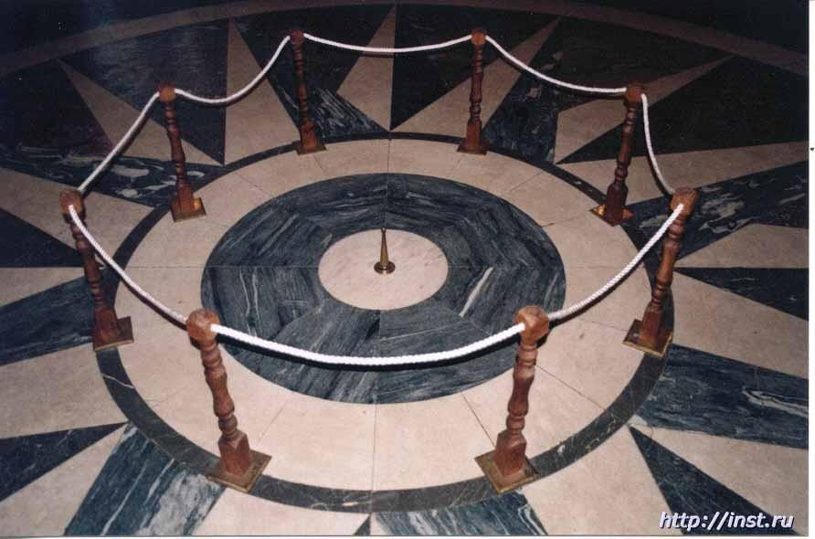
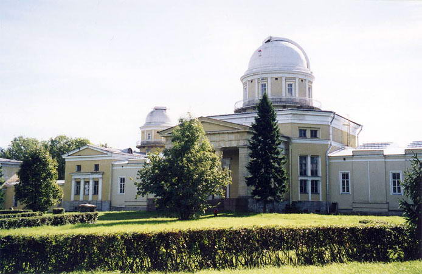
Система высот
Кронштадтский футшток Начало системы высот
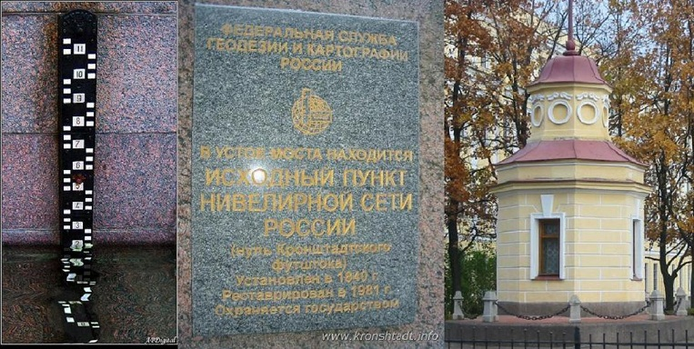
Система координат
Стенные репера
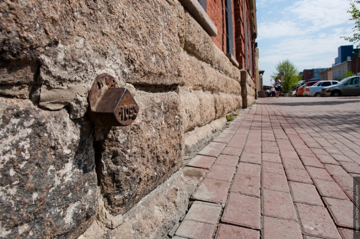
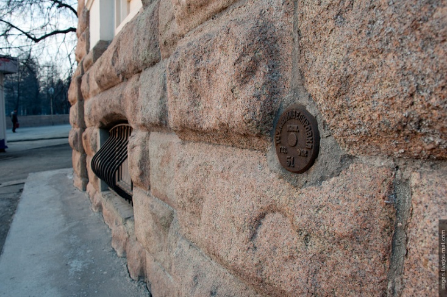
Система координат
Грунтовые репера
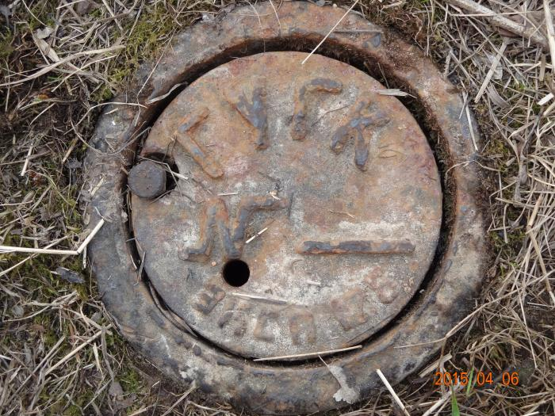
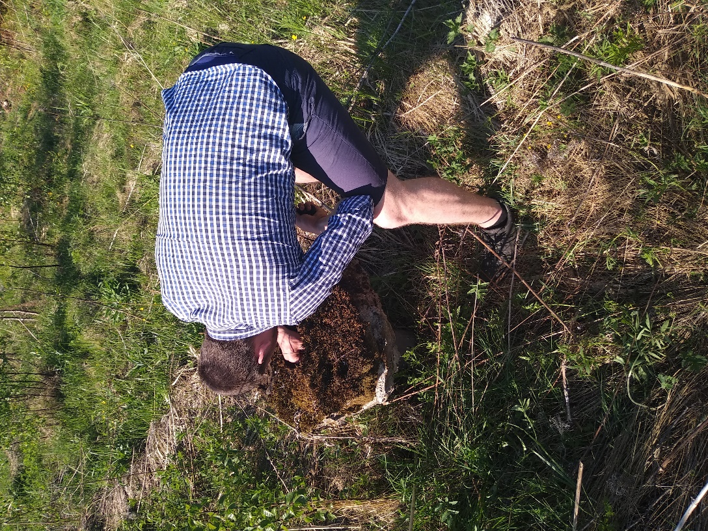
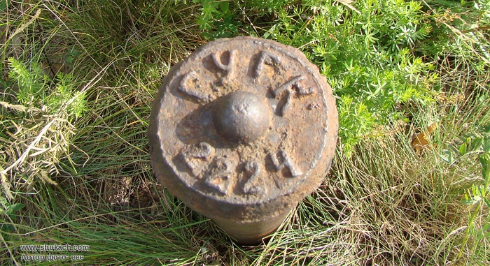
Привязка АФС
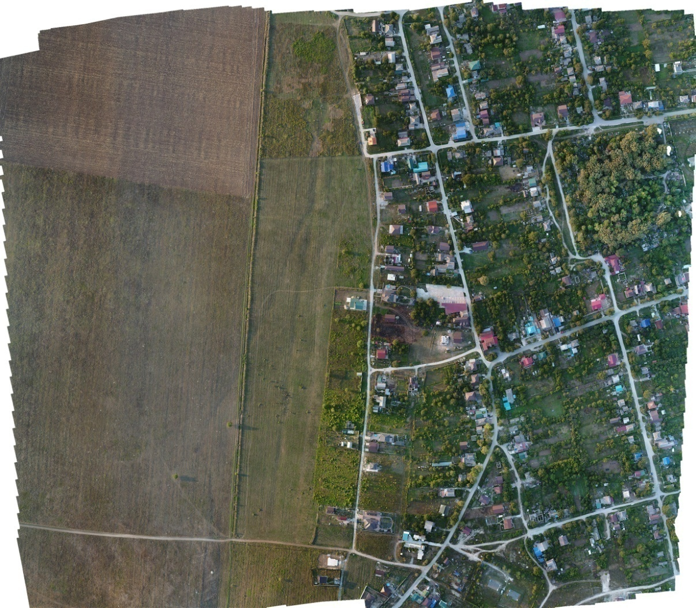
Привязка АФС
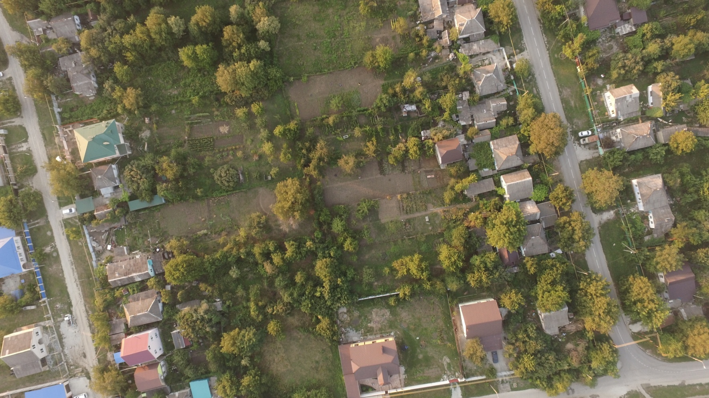
Привязка АФС
WGS-84
— Всемирная геодезическая система(WGS) является стандартом, используемым в картографии , геодезии и спутниковой навигации. Это геоцентрическая система координат с геодезической системой отсчета , и связанной с ней гравитационной(EGM) и магнитной(WMM) моделями Земли.
Переход из одной СК в другую
"?????", 8, 9999, 10, 316.151, 78.924, 589.650, 1.57273, -2.69209, -2.34693, 8.4507, 0, 7, 37.5, 55.66666666667, 1, 16.098, 14.512
https://mapbasic.ru/msksolutions
Описание WKT proj4
- WKT
- PROJCRS["WGS 84 / UTM zone 37N", BASEGEOGCRS["WGS 84", ENSEMBLE["World Geodetic System 1984 ensemble", MEMBER["World Geodetic System 1984 (Transit)"], MEMBER["World Geodetic System 1984 (G730)"], MEMBER["World Geodetic System 1984 (G873)"], MEMBER["World Geodetic System 1984 (G1150)"], MEMBER["World Geodetic System 1984 (G1674)"], MEMBER["World Geodetic System 1984 (G1762)"], MEMBER["World Geodetic System 1984 (G2139)"], ELLIPSOID["WGS 84",6378137,298.257223563, LENGTHUNIT["metre",1]], ENSEMBLEACCURACY[2.0]], PRIMEM["Greenwich",0, ANGLEUNIT["degree",0.0174532925199433]], ID["EPSG",4326]], CONVERSION["UTM zone 37N", METHOD["Transverse Mercator", ID["EPSG",9807]], PARAMETER["Latitude of natural origin",0, ANGLEUNIT["degree",0.0174532925199433], ID["EPSG",8801]], PARAMETER["Longitude of natural origin",39, ANGLEUNIT["degree",0.0174532925199433], ID["EPSG",8802]], PARAMETER["Scale factor at natural origin",0.9996, SCALEUNIT["unity",1], ID["EPSG",8805]], PARAMETER["False easting",500000, LENGTHUNIT["metre",1], ID["EPSG",8806]], PARAMETER["False northing",0, LENGTHUNIT["metre",1], ID["EPSG",8807]]], CS[Cartesian,2], AXIS["(E)",east, ORDER[1], LENGTHUNIT["metre",1]], AXIS["(N)",north, ORDER[2], LENGTHUNIT["metre",1]], USAGE[ SCOPE["Engineering survey, topographic mapping."], AREA["Between 36°E and 42°E, northern hemisphere between equator and 84°N, onshore and offshore. Djibouti. Egypt. Eritrea. Ethiopia. Georgia. Iraq. Jordan. Kenya. Lebanon. Russian Federation. Saudi Arabia. Somalia. Sudan. Syria. Turkey. Ukraine."], BBOX[0,36,84,42]], ID["EPSG",32637]]
- WGS 84 / UTM zone 37N
- Свойства
- Единицы: метры
- Динамическая (основана на датуме, не привязанном к опорной сети)
- Небесное тело: Earth
- На основе World Geodetic System 1984 ensemble (EPSG:6326), ограниченной точности в лучшем случае 2 метра .
- Метод: Universal Transverse Mercator (UTM)
- Охват
- 36.00, 0.00, 42.00, 84.00
- +proj=utm
- +zone=37
- +datum=WGS84
- +units=m
- +no_defs
Описание WKT proj4
- WKT
- PROJCRS["Pulkovo 1942 / Gauss-Kruger zone 7", BASEGEOGCRS["Pulkovo 1942", DATUM["Pulkovo 1942", ELLIPSOID["Krassowsky 1940",6378245,298.3, LENGTHUNIT["metre",1]]], PRIMEM["Greenwich",0, ANGLEUNIT["degree",0.0174532925199433]], ID["EPSG",4284]], CONVERSION["6-degree Gauss-Kruger zone 7", METHOD["Transverse Mercator", ID["EPSG",9807]], PARAMETER["Latitude of natural origin",0, ANGLEUNIT["degree",0.0174532925199433], ID["EPSG",8801]], PARAMETER["Longitude of natural origin",39, ANGLEUNIT["degree",0.0174532925199433], ID["EPSG",8802]], PARAMETER["Scale factor at natural origin",1, SCALEUNIT["unity",1], ID["EPSG",8805]], PARAMETER["False easting",7500000, LENGTHUNIT["metre",1], ID["EPSG",8806]], PARAMETER["False northing",0, LENGTHUNIT["metre",1], ID["EPSG",8807]]], CS[Cartesian,2], AXIS["northing (X)",north, ORDER[1], LENGTHUNIT["metre",1]], AXIS["easting (Y)",east, ORDER[2], LENGTHUNIT["metre",1]], USAGE[ SCOPE["Topographic mapping (medium scale)."], AREA["Georgia - onshore west of 36°E; Russian Federation - onshore 36°E to 42°E; Ukraine - onshore east of 36°E."], BBOX[41.43,36,69.23,42]], ID["EPSG",28407]]
- Pulkovo 1942 / Gauss-Kruger zone 7
- Свойства
- Единицы: метры
- Статическая (базируется на опорной сети)
- Небесное тело: Earth
- Метод: Transverse Mercator
- Охват
- 36.00, 41.43, 42.00, 69.23
- +proj=tmerc +lat_0=0 +lon_0=39 +k=1 +x_0=7500000 +y_0=0 +ellps=krass +units=m +no_defs
Опорная сеть пунктов ГГС
Проблемы
- Различные описания геоидов, квазигеоидов, элипсоидов Земли
- Засекреченность и неточность параметров преобразования (перехода)
- Уничтоженная сеть опорных пунктов
- Плохая связь в передачи данных между приемниками
- Помехи, которые заглушают часть частот, на которых передаются сигналы GPS/ГЛОНАСС
Разграфка и номенклатура
Номенклатура карт
Менять проекции это весело
Слайд 48

Примерно так выглядит Земля
Спасибо за внимание
www.thetruesize.com